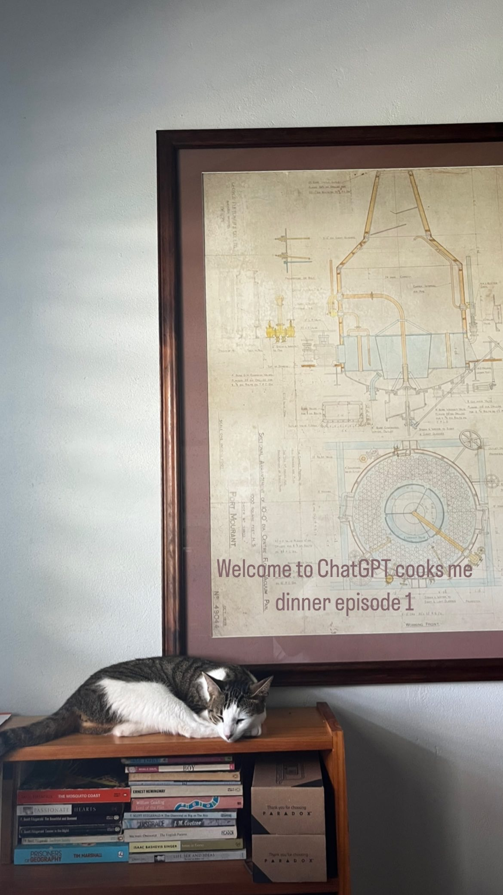
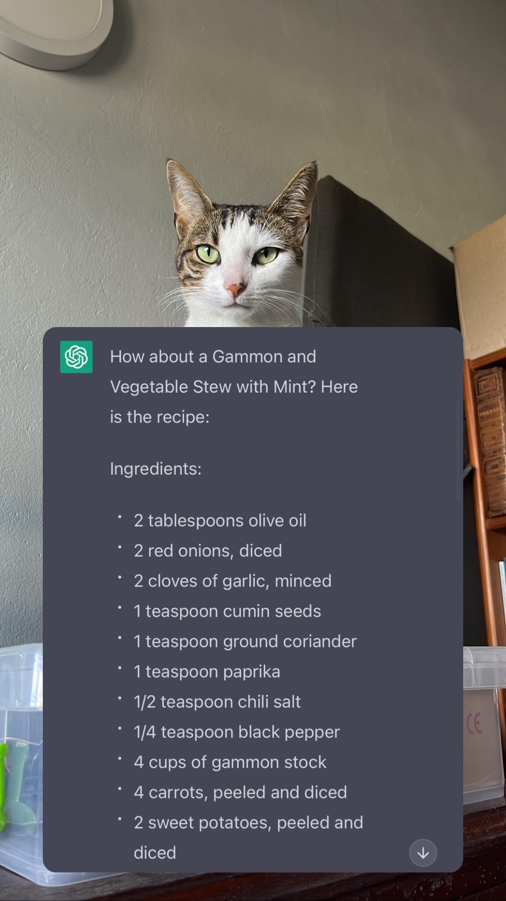
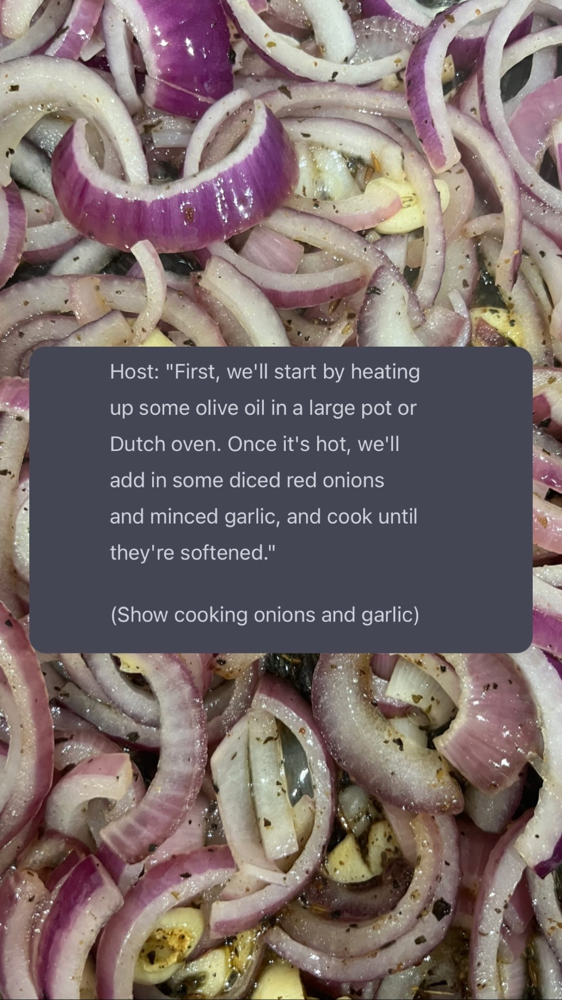
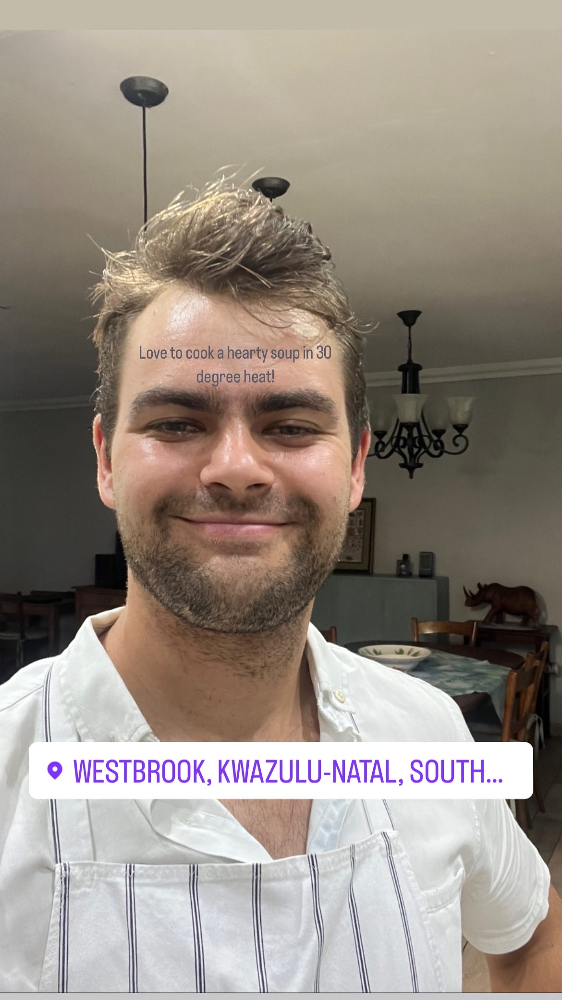

ChatGPT cooks me dinner
üç≤ Master the kitchen like a pro with the help of ChatGPT! üç¥ I tried it out and the results will blow your mind! ü§Ø Find out what happened when I asked a language model for recipe ideas and cooking instructions. üò≤ You won‚Äôt believe how delicious my Gammon and Vegetable Stew with Mint turned out! üçΩÔ∏è Don‚Äôt miss out on this must-read blog post! üëÄ
Intro
I ask ChatGPT to help my cook dinner based on the ingredients I had in the fridge - it was a great success!
Have a look below at how it went!
I also asked it to write this blog post, the output for which I include below.
Process

 





Suggested blog post text
Cooking is always a fun and creative experience, but sometimes it can be challenging to come up with new and exciting recipes. That’s why having a helpful tool like ChatGPT can make a big difference in the kitchen.
Recently, I had the opportunity to put ChatGPT to the test as a cooking assistant. I provided a list of ingredients that I had on hand and asked for a recipe suggestion. ChatGPT quickly came up with a recipe for a Gammon and Vegetable Stew with Mint, along with detailed instructions for cooking the dish.
I was impressed with the speed and accuracy of ChatGPT’s suggestion, and even more impressed with the quality of the recipe. The stew turned out to be delicious, hearty, and comforting - exactly what I was looking for on a cold winter day.
But ChatGPT’s assistance didn’t stop there. I asked if I could add a splash of Chardonnay to the stew and ChatGPT not only gave me a positive response, but also provided instructions on when and how to add the wine, along with a reminder to use a good quality Chardonnay to enhance the overall taste of the dish.
Overall, my experience with ChatGPT as a cooking assistant was extremely positive. It was able to provide me with a recipe and instructions that resulted in a delicious and satisfying meal. I was impressed with its speed, accuracy, and helpful suggestions, and I would definitely use ChatGPT again for recipe ideas and cooking instructions.
Conclusion
What an amazing tool!